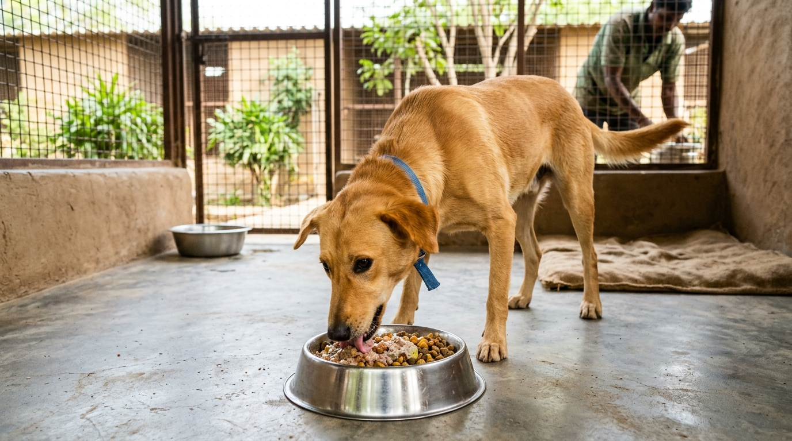

When an emaciated street dog is rescued with visible skeletal ribs, hollow eye sockets, and paper-thin skin hanging over sunken pelvic bones (Body Condition Score 1/9), the intuitive human reaction is to place a large, overflowing bowl of rich food in front of the starving animal. Tragically, in severe starvation, giving a large meal is one of the most fatal mistakes a rescuer can make.
In prolonged starvation, the canine body undergoes complex metabolic down-regulation, shifting from glucose metabolism to ketone and fatty acid catabolism while depleting intracellular phosphorus, potassium, and magnesium. Sudden ingestion of carbohydrates triggers a massive surge of insulin, driving remaining serum electrolytes into cells and precipitating Refeeding Syndrome—a fatal cascade of acute cardiac arrhythmia, respiratory arrest, and hemolytic anemia. At Dogs Protection Trust, our clinical refeeding protocols safely navigate this metabolic danger zone.
1. The Pathophysiology of Canine Starvation & Cachexia
To safely restore a starved dog, one must understand the three stages of metabolic starvation:
- Phase 1: Glycogen Depletion (Hours 0 - 24): Hepatic glycogen stores are completely exhausted within 24 hours of food deprivation.
- Phase 2: Protein Gluconeogenesis (Days 2 - 7): The body catabolizes skeletal muscle tissue and visceral organ proteins to produce amino acids for essential brain glucose requirements.
- Phase 3: Chronic Ketosis & Organ Atrophy (Week 2+): Fat reserves are converted to ketone bodies. Intestinal villi shrink and atrophy, losing the digestive enzymes needed to absorb standard food. The heart muscle thins, and basal metabolic rate drops by up to 30%.
2. The DPT 4-Stage Clinical Refeeding Protocol
| Refeeding Phase | Daily Caloric Intake | Dietary Composition & Frequency |
|---|---|---|
| Phase 1: Metabolic Awakening (Days 1 - 3) | 25% of Resting Energy Requirement (RER) | Warm electrolyte broths, strained chicken albumin puree fed in 6 micro-portions every 3 hours |
| Phase 2: Slow Energy Ramp (Days 4 - 7) | 50% of Resting Energy Requirement | Introduction of pureed boiled chicken and white rice gruel with potassium and phosphorus supplements (4 meals/day) |
| Phase 3: Cellular Rebuilding (Days 8 - 14) | 75% to 100% of Normal Maintenance Energy | Soft chicken stew, boiled eggs, pumpkin fiber, digestive probiotic enzymes (3 meals/day) |
| Phase 4: Hyper-Anabolic Mass Gain (Week 3+) | 125% to 150% of Maintenance Energy | Standard high-protein shelter nutrition, bone broth collagen, and Omega-3 skin supplements (2 large meals/day) |
3. Case Study: Sheru's Dramatic 60-Day Weight Transformation
🾠Case Study: Sheru's Fight for Survival
The Rescue: Sheru, a 3-year-old male Indie, was found collapsed behind an abandoned warehouse in Hebbal. He weighed a shocking 7.2 kg (ideal body weight: 18 kg). He was hypothermic (36.1°C), comatose, and infested with thousands of fleas.
The Clinical Intervention: Sheru was placed on a thermal heating pad and administered warm IV dextrose-saline with potassium additives. For 72 hours, he received 50 ml of pureed chicken-albumin broth every 3 hours.
The Result: By Day 14, Sheru was standing unassisted and wagging his tail. By Day 60, Sheru reached a robust, muscular 17.5 kg with a gleaming golden coat. Today, Sheru is a healthy, energetic shelter resident who loves his morning meals!
4. The Biochemical Mechanics of Hypophosphatemia & Cellular Collapse
To fully grasp why refeeding must be slow, one must examine the role of inorganic phosphate ($PO_4$). Phosphate is the essential molecular building block of Adenosine Triphosphate (ATP)—the primary energy currency of all living cells—as well as 2,3-diphosphoglycerate (2,3-DPG), which regulates oxygen release from red blood cells to vital tissues.
During prolonged starvation, total body phosphate is severely depleted through urinary and fecal losses, although serum levels appear deceptively normal due to transcellular shifts. When a starved dog is suddenly fed carbohydrates, the rapid secretion of insulin stimulates cellular uptake of phosphate for glucose phosphorylation. Serum phosphate crashes precipitously (often $< 1.0\text{ mg/dL}$), causing acute ATP depletion. Red blood cells burst (hemolysis), diaphragm muscles fail, and cardiac arrest ensues within hours.
At DPT, we systematically prevent hypophosphatemia by fortifying all recovery gruels with sodium/potassium phosphate salts and keeping carbohydrate concentrations under 20% during the first 96 hours of care.
5. Nasogastric Tube vs. Syringe Micro-Enteral Feeding
In critically weak, comatose, or recumbent rescues who lack the strength to swallow, forced oral syringe feeding carries a catastrophic risk of aspiration pneumonia (fluid entering the trachea and lungs). For these critical patients, our veterinary team places a soft, flexible Nasogastric (NG) Feeding Tube:
- Anatomical Placement: Lubricated 5-8 French silicone tube passed gently through the ventral nasal meatus into the distal esophagus or stomach, secured with surgical tape and an Elizabethan collar.
- Continuous Syringe-Pump Infusion: Liquid elemental diets are delivered slowly at 2-5 ml/hour, delivering steady amino acids directly to intestinal mucosal enterocytes without triggering emesis or nausea.
🾠Case Study 2: Chhavi's Recovery from Extreme Anemia & Cachexia
The Incident: Chhavi, a 6-month-old female puppy, was found abandoned in an open trash dump near Chamundipuram. She weighed just 3.1 kg, with a Packed Cell Volume (PCV) of only 11% (normal: 37-55%) due to combined starvation and heavy hookworm anemia.
The Intensive Care: Chhavi received an immediate whole-blood cross-matched transfusion from our resident donor dog, Max, raising her PCV to 24%. She was placed on an NG tube receiving strained chicken albumin, iron dextran, and erythropoietin stimulants.
The Outcome: Within 4 weeks, Chhavi's bone marrow was producing millions of new red blood cells. By Month 2, she gained 6 kg of solid muscle mass and was successfully adopted by a loving family in Mysore!
6. Essential Biochemical Supplementation
During the critical first two weeks of recovery, standard food is fortified with specialized micronutrients:
- Thiamine (Vitamin B1): A vital cofactor in carbohydrate metabolism. Thiamine deficiency during refeeding causes acute Wernicke-like encephalopathy and neurological collapse.
- Dicalcium Phosphate & Magnesium Glycinate: Prevents hypophosphatemia and neuromuscular tremors.
- Probiotic & Prebiotic Blends: Re-establishes healthy gut microbiome flora across atrophied intestinal villi, preventing osmotic diarrhea.
7. Long-Term Hepatic & Renal Rehabilitation After Severe Starvation
Surviving acute refeeding is the first milestone. The secondary phase involves restoring microscopic liver architecture (reversing hepatic lipidosis) and renal glomerular filtration capacity damaged by prolonged circulatory hypotension:
- Milk Thistle (Silymarin) & SAMe Therapy: Stabilizes hepatic cell membranes, stimulates ribosomal protein synthesis, and enhances endogenous glutathione production.
- L-Carnitine & Coenzyme Q10 Cardioprotection: Fatty acids require L-carnitine to cross the mitochondrial inner membrane for beta-oxidation. Supplying L-carnitine protects thinned myocardial fibers from oxidative stress as physical activity resumes.
- Gradual Exercise Progression: Short 5-minute leash walks on soft grass, slowly increasing by 3 minutes weekly to rebuild skeletal muscle without exhausting metabolic reserves.
8. Specialized Nutrition for Starved Lactating Mother Dogs
Rescuing an emaciated mother dog nursing newborn puppies presents a dual metabolic challenge. Milk production demands 200% to 300% above normal maintenance energy. If fed inadequately, the mother will develop eclampsia (puerperal tetany / acute hypocalcemia), experiencing muscle rigidity, hyperthermia, and fatal seizures.
At DPT, malnourished nursing mothers receive high-calorie calcium-fortified goat milk broths, boiled egg whites, steamed liver mash, and oral calcium carbonate paste 4 times daily, safely sustaining maternal milk output while rebuilding the mother's depleted bone density.
9. Sponsoring a Starved Dog's Recovery
Specialized refeeding broths, IV electrolytes, therapeutic supplements, and 60 days of high-protein nutrition cost approximately ₹3,000 per patient. Your donation directly saves a collapsed street dog from metabolic organ failure.
Written by DPT Clinical Nutrition Team
Specialists in veterinary clinical nutrition, refeeding protocols, and critical care mass rebuilding at Dogs Protection Trust Mysore.
6. Monitoring Serum Electrolytes, Blood Urea Nitrogen & Organ Enzymes
When an emaciated street dog is rescued with severe body wasting (BCS 1/9), immediate aggressive feeding is clinically contraindicated because sudden glucose influx triggers fatal refeeding syndrome characterized by acute intracellular phosphate, potassium, and magnesium shifting. In our Mysore veterinary clinic, every severely malnourished patient undergoes comprehensive baseline biochemical profiling including Serum Phosphorus, Potassium, BUN, Creatinine, and Alanine Aminotransferase (ALT) before a clinical dietary plan is initiated.
During the critical first 72 hours, calorie intake is capped at only 30% to 50% of the dog's resting energy requirement (RER), delivered through continuous oral electrolyte therapy and micro-feedings every 3 hours. As phosphorus and potassium levels stabilize in daily serum tests, caloric density is increased by 15% daily increments, allowing internal organs to safely upregulate insulin receptors and rebuild enzymatic metabolic machinery without cardiovascular collapse or hepatic lipidosis.
7. Probiotic Therapy & Restoring Gut Microbiome in Starved Dogs
Rebuilding the Intestinal Mucosal Barrier
Chronic starvation leads to severe intestinal villous atrophy, causing bacterial translocation and persistent watery diarrhea when food is reintroduced. DPT implements a specialized gut mucosal regeneration protocol:
- L-Glutamine & Bone Broth Infusions: Providing pure amino acid building blocks that nourish enterocytes and repair microscopic mucosal tears.
- High-Potency Multi-Strain Probiotics: Inoculating the digestive tract with Lactobacillus acidophilus, Bifidobacterium animalis, and Enterococcus faecium to suppress pathogenic clostridial bacterial overgrowth.
- Gradual Introduction of Soluble Fibers: Utilizing pureed steamed pumpkin and psyllium husk to form firm, healthy stools and optimize nutrient absorption.
10. Complete Donation Transparency & Community Impact in Mysore
At Dogs Protection Trust, every single rupee received from compassionate animal lovers is directed straight into animal feed, sterile surgical equipment, life-saving medicines, and shelter utilities. We maintain transparent financial books, publish regular video and photo updates of our patients, and welcome community members to visit our sanctuary in Mysore to see their generous support in action. You can donate directly via UPI to 9108021554@sbi or support our ongoing veterinary and nutrition funds to help us rescue, heal, and protect hundreds more street canines every year.